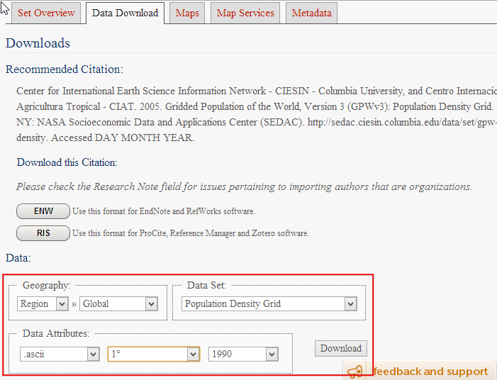
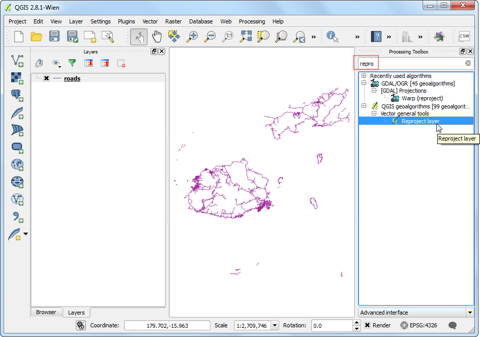
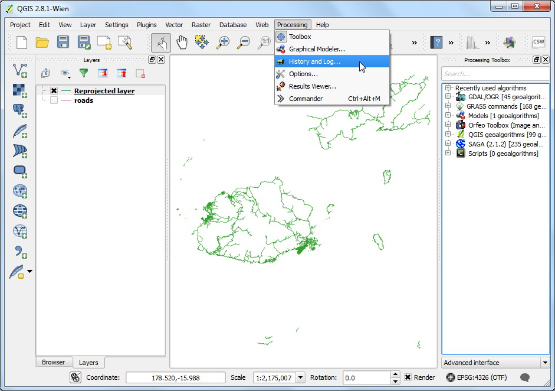
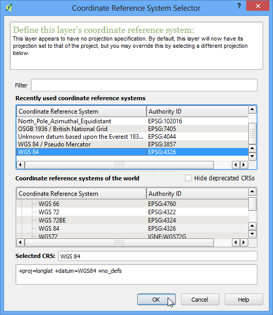
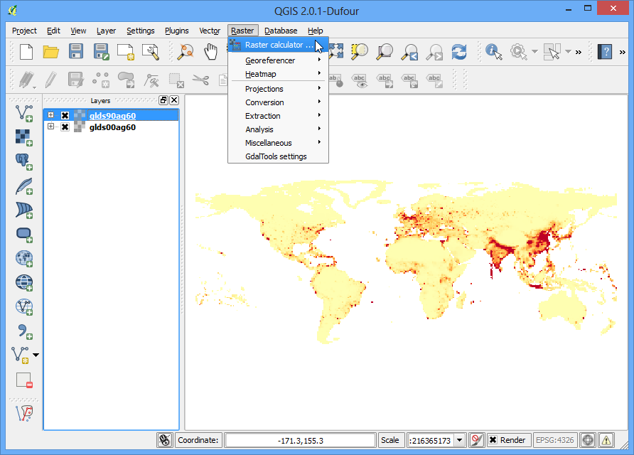
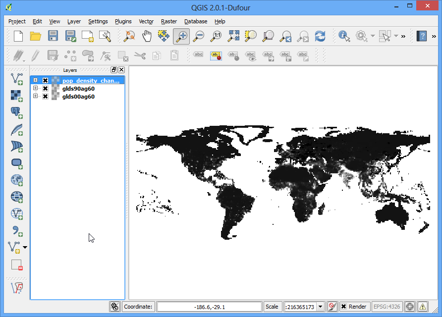
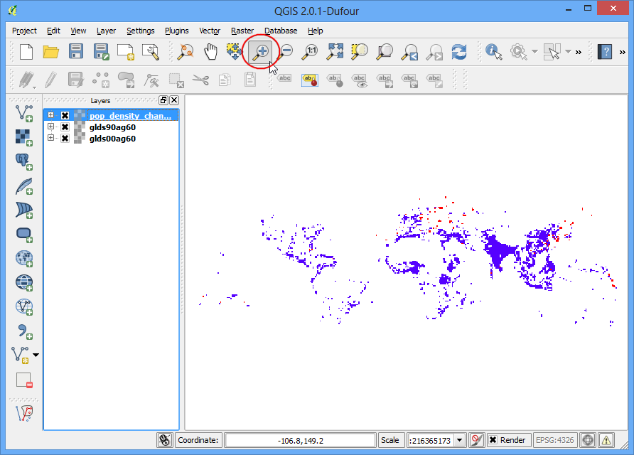
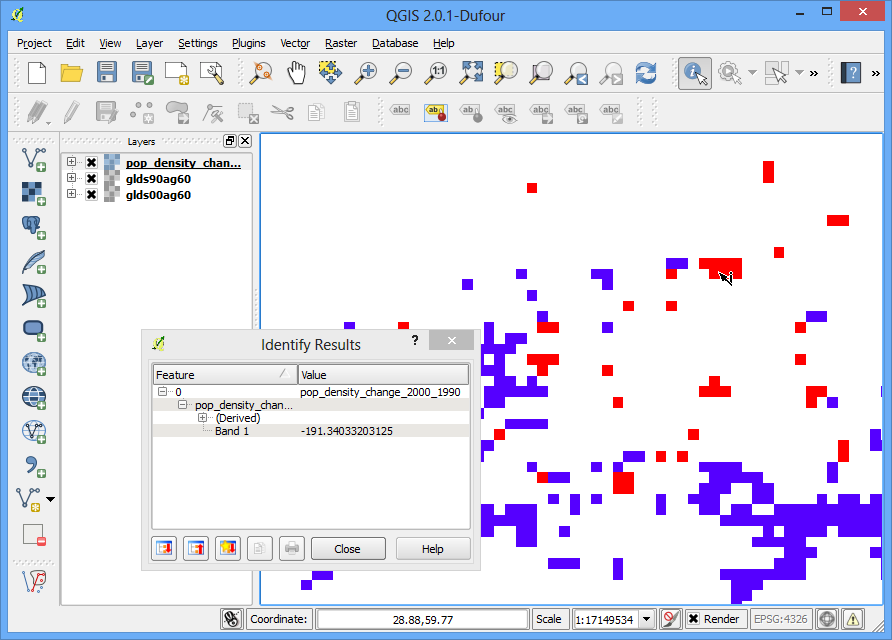

Styling dan Analisis Dasar Raster
[ Download PDF
A4
Letter ]
Banyak observasi dan penelitian sains menghasilkan dataset raster. Raster adalah kumpulan grid dari pixel-pixel yang mempunyai nilai khusus. Dengan melakukan operasi matematika pada nilai-nilai ini, analisa yang menarik dapat dilakukan. QGIS mempunyai beberapa kemampuan analisis dasar yang terpasang di Raster Calculator . Dalam tutorial ini, kita akan mengeksplor dasar-dasar dalam memakai Raster Calculator dan opsi yang tersedia dalam hal menstyle raster.
Tinjauan Tugas
Kita akan menggunakan data grid kepadatan populasi untuk menemukan dan memvisualisasikan area di dunia yang mengalami perubahan kepadatan penduduk secara dramatis antara tahun 1990 dan 2000.
Skill lain yang akan anda pelajari
Mendapatkan data
Kita akan menggunakan dataset Gridded Population of the World (GPW) v3 dari Columbia University. Secara khusus, kita memerlujan Grid kepadatan penduduk untuk seluruh dunia dalam format ASCII dan untuk tahun 1990 dan 2000.
Berkiut bagaimana mencari dan mengunduh data yang relevan.
Akses Population Density Grid, v3 download page. . Pilih Data Attributes dengan .ascii format , 1° resolution dan 1990 year . Klik Download . Dalam tahap ini, anda bisa membuat sebuah akun bebas dan masuk, atau menggunakan tombol Guest Download pada bagian bawah untuk segera mengunduh data. Ulang proses tadi untuk data 2000 year

Sekarang anda akan memiliki 2 file zip yang sudah diunduh.
For convenience, you may directly download a copy of the datasets from the
links below:
gl_gpwv3_pdens_90_ascii_one.zip
gl_gpwv3_pdens_00_ascii_one.zip
Sumber Data [GPW3]
Prosedur
Buka QGIS dan akses .

Cari lokasi file zip yang sudah diunduh. Tahan tombol Ctrl dan klik pada kedua file zip untuk memilih mereka. Dengan cara ini anda bisa untuk membuka kedua file dengan satu langkah.

Setiap fil zip memiliki 2 file grid. a dalam nama file berarti perhitungan populasi sudah disesuaikan untuk mencocokkan jumlah UN. Kita akan menggunakan grid yang sudah disesuaikan unutk tutorial ini. Pilih glds00ag60.asc sebagai layer yang akan ditambahkan. Klik OK.

Layer belum mempunyai definisi CRS, dan karena grid terdiri dari lintang dan bujur, pilih EPSG:4326 sebagai CRS .

karena kita memilih kedua zip file, anda akan melihat dialog serupa sekali lagi. Ulangi proses dan pilih grid glds90ag60.asc sebagai layer yang ditambahkan.

Sekali lagi pilih EPSG:4326 sebagai CRS.

Sekarang anda akan melihat kedua raster terbuka di QGIS. Raster terender dalam skala abu-abu, dimana pixel yang lebih gelap mengindikasikan nilai yang lebih rendah dan pixel yang lebih terang mengindikasikan nilai yang lebih tinggi.

Setiap pixel dalam raster mempunyai nilai. Nilai ini adalah kepadatan populasi untuk grid tersebut. Klik tombol Identify Features untuk memilih tool dan klik di mana saja pada raster untuk melihat nilai pada suatu pixel.

Untuk visualisasi pola kepadatan penduduk yang lebih baik, kita perlu untuk melakukan perubahan dalam stylenya. Klik kanan pada nama layer dan pilih Properties . Anda dapat mengdobel-klik pada nama layer di Table of Content atau TOC untuk memunculkan dialog Layer Properties

Pada tab Style, ubah Render type ke Singleband pseudocolor . kemudian, klik Classify di Generate a new color map . Anda akan lihat 5 nilai warna baru tercipta. Klik OK.

Kembali ke kanvas QGIS, anda akan melihat sebuah hasil render dari raster menyerupai peta panas. Ulangi proses untuk raster yang lain.

Untuk analisis kita, kita perlu menemukan area dengan perubahan populasi terbesar antara tahun 1990 dan 2000. Cara untuk menuntaskannya dengan menemukan perbedaan antara tiap nilai pixel grid pada kedua layer. Pilih .

- In the Raster bands section, you can select the layer by
double-clicking on them. The bands are named after the raster name followed
by @ and band number. Since each of our rasters have only 1 band, you will
see only 1 entry per raster. The raster calculator can apply mathematical
operations on the raster pixels. In this case we want to enter a simple
formula to subtract the 1990 population density from 2000. Enter
glds00ag60@1 - glds90ag60@1 as the formula. Name your output layer as
pop_density_change_2000_1990.tif and check the box next to
Add result to project. Click OK.

Ketika perhitungan selesai, anda akan melihat layer baru muncul di QGIS.

Visualisai level abu-abu atau grayscale berguna, tapi kita dapat membuat hasil yang jauh lebih informatif. Klik kanan pada layer pop_density_change_2000_1990 dan pilih Properties.

Kita ingin melakukan style pada layer sehingga nilai pixel dalam rentang tertentu mendapatkan warna yang sama. Sebelum kita menyelami hal ini, akses tab Metadata dan lihat properti dari raster tersebut. Perhatikan nilai minimum dan maksimum layer ini.

Sekarang akses tab Style . Pilih guilabel:Singleband pseudocolor sebagai guilabel:Render type di Band Rendering . Atur guilabel:Color interpolation ke Discrete . Klik tombol guilabel:Add entry 4x untuk mebuat 4 kelas unik. Klik pada awal bagian untuk merubah nilai. Cara kerja pemetaan warna adalah dengan semua nilai yang lebih rendah daripada nilai yang dimasukkan akan mendapat warna entry tersebut. Karena nilai minimum raster kita tepat di atas -2000, kita pilih -2000 sebagai entry pertama. Ini untuk nilai yang tidak punya data. Masukkan nilai dan label untuk entry yang lain seperti di bawah dan klik OK.

Sekarang anda akan melihat visualisasi yang lebih kuat dimana anda dapat melihat area yang mempunyai perubuhan penduduk baik positif ataupun negatif. Klik tombol Zoom In dan gambar sebuah segi empat di sekitar Eropa untuk mengeksplor daerah lebih detail.

Pilih tool Identify dan klik daerah Merah dan Biru untuk verifikasi bahwa aturan stylin anda bekerja sesuai dengan harapan.

Sekarang mari kita bawa analisis ini satu langkah lebih jauh dan menemukan area-area yang mempunyai perubahan kepadatan penduduk yang negatif saja. Buka .

- Enter the expression as shown below What this expression will do is set the
value of the pixel to 1 is if matches the expression and 0 if it doesn’t.
So we will get a raster with pixel value of 1 where there was negative
change and 0 where there wasn’t. Name the output layer as
negative_pop_change_2000_1990 and check the box next to Add
result to project. Click OK.
pop_density_change_2000_1990@1 < -10

Ketika layer baru sudah terbuka, klik kanan layer tersebut dan pilih Properties . Di tab Transparency , tambahkan 0 untuk Additional no data value . Pengaturan ini akan membuat pixel dengan nilai 0 menjadi transparan juga. Klik OK.

Sekarang anda akan melihat area yang mempunyai perubhan kepadatan penduduk yang negatif sebagai pixel abu-abu.